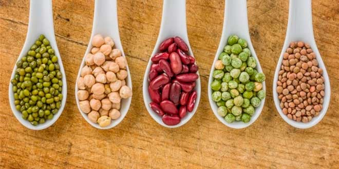
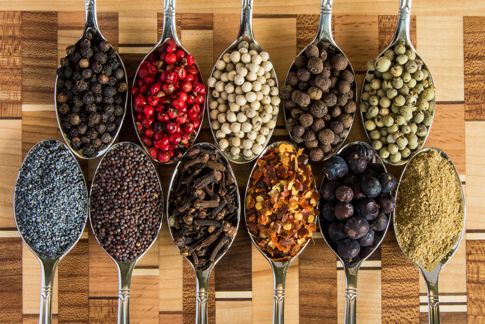
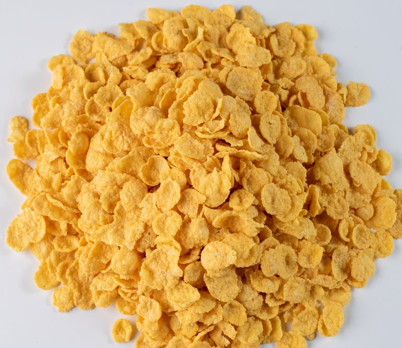
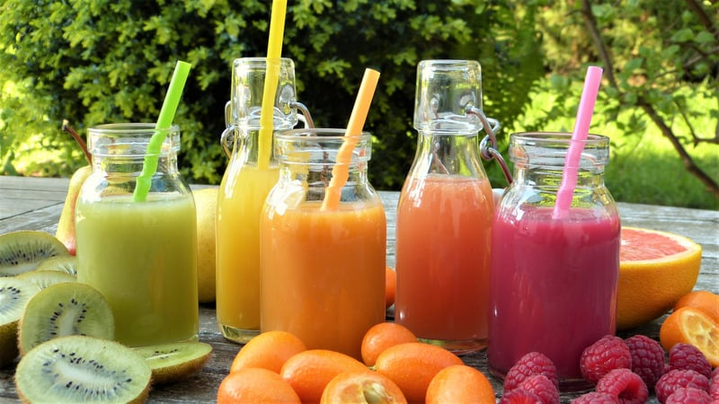

Sobre Nosotros
Productos
Viandas
Contacto
Nuestros Productos
Legumbres

Garbanzos
Porotos mung
Lentejas turcas
Soja orgánica
Habas
Porotos alubia
Especias

Pimienta negra
Sal del himalaya
Sal marina
Garan masala
Pimenton dulce
Comino
Ají molido
Canela
Cereales

Copos sin azucar
Almohaditas rellenas
Avena
Trigo
Jugos naturales

Limonada
Mix de frutas
Pomelada
Naranjada
Arándanos